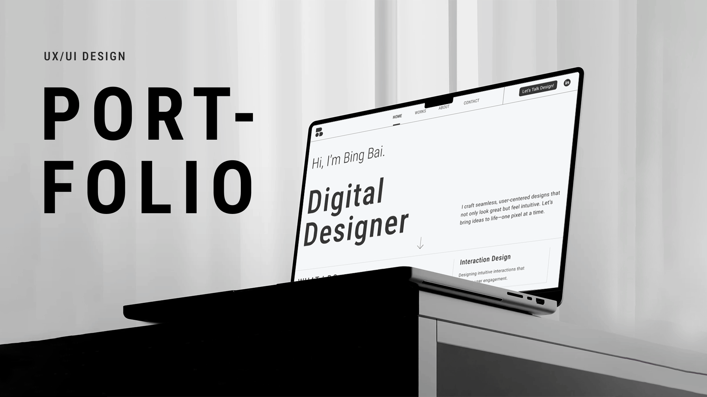
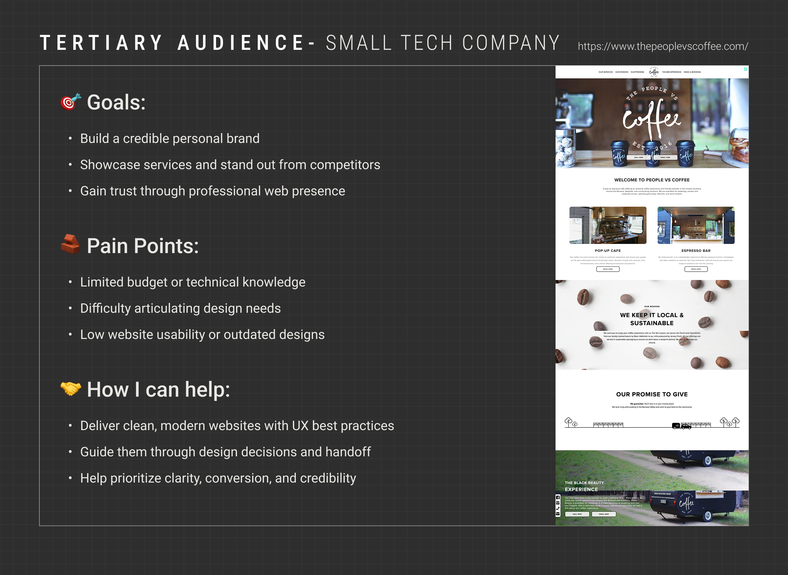
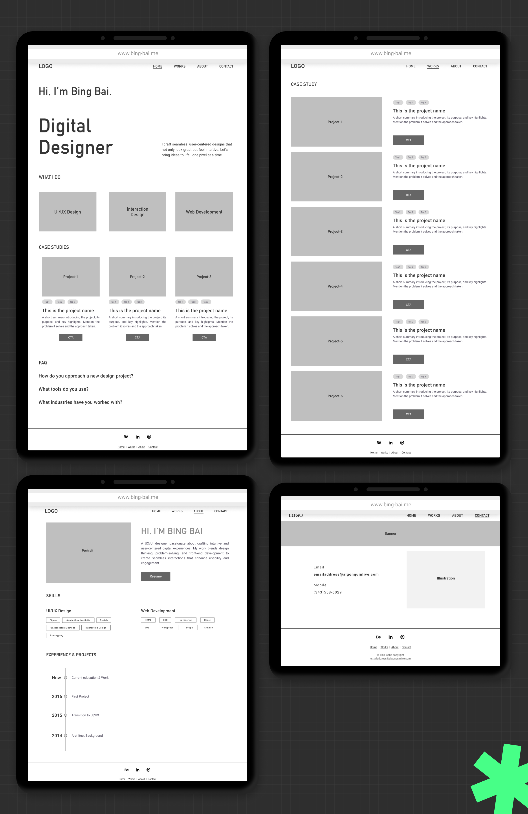

UX Portfolio
01 / Background
This project was created as part of my job-hunting journey - a way to fully demonstrate my skills to potential employers. Instead of just showing pretty visuals, I wanted to walk through the entire process: from research and user insights to design and development. I treated this like a real client project, starting from scratch and building everything myself - from 0 to 1.
Through this case, I hope to give hiring teams a clear view of how I think, solve problems, and bring ideas to life with thoughtful, user-centered design.
02 / Audience Research
I conducted market research to understand the needs, frustrations, and expectations of three target audiences: stable companies, small tech startups, and freelance clients.
03 / Personas
Based on our findings, I created personas that reflect our primary and secondary user types, highlighting their motivations and pain points.
04 / User Journey Map
A user journey was created to visualize how a typical user interacts with our product, emphasizing key emotions and potential friction points.
05 / Site Map
06 / Lo-Fi Wireframe
Quick sketches to explore layout structure and content flow before diving into visual design.
07 / Mood Board
Keywords: Organized · Reliable · Responsive · Innovative · Intuitive
My visual approach emphasizes clarity, consistency, and usability. I focus on building a clean and organized layout with a strong visual hierarchy, ensuring users can easily navigate and absorb content. By maintaining a reliable design system and adapting it responsively across devices, I create a seamless experience. At the same time, I bring in creative and intuitive elements to make the interaction feel both natural and memorable.
08 / Visual Design
I designed a clean and consistent UI system to support the overall look and feel of the site. From type and color to buttons and cards, every element is built for clarity and usability while keeping the brand style in mind.
09 / Screen Showcase
10 / Reflection
This project was both a challenge and a growth opportunity. One of the biggest hurdles I faced was balancing storytelling with clarity - especially when deciding what to include on the homepage. I iterated multiple times to streamline the content and create a structure that feels intuitive.
If I had more time, I would explore adding subtle microinteractions and improving the performance optimization for mobile.
My biggest takeaway? A well-crafted portfolio is more than just visuals - it's about showcasing your thinking, your decisions, and how you solve problems. Through this process, I gained deeper confidence in designing not only for users, but also for recruiters and hiring managers.
Thanks for watching!
Explore my next project → Chinese Flavour
Browse more projects → Browse More Projects